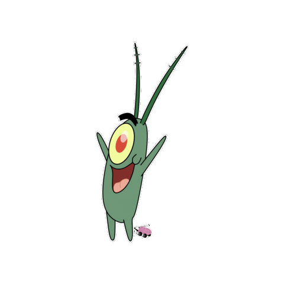

I am sure many have heard of Lost Episode creepypastas. They usually involve an incredibly graphic episode that conveys such fear to children that it is never aired, though someone manages to sneak a viewing or own one of the tapes. The most popular example of this is Squidward's Suicide, in which Squidward commits suicide, hence the title.
Of course, all of these creepypastas are false. Yet I remember a SpongeBob episode that was altered heavily, but still remains in circulation today. This is One Coarse Meal, from season 7. In the episode, Mr. Krabs finds out that Plankton is horrified of whales, and uses it to his advantage. This is one of the least popular episodes of the show due to its dark nature, even after being heavily altered.
Now how would I have seen this episode before it was edited? It’s simple, really. This is one of the seven SpongeBob episodes that was revealed on the internet before it aired on TV. Always a big fan of the show, I was excited at the idea of having a SpongeBob episode premiere on the internet before television. I rapidly reloaded the Nickelodeon page, and finally, it came up. It was known as “Plankton Got Served”, though it was eventually changed.
Most of the episode is identical to the one that is circulated today. Plankton manages to break into the Krusty Krab, and ties up Mr. Krabs and SpongeBob. As he is about to finally get the secret formula from SpongeBob, Mr. Krabs' daughter Pearl walks in. This terrifies Plankton and causes him to run out. Plankton later claims his ancestors were eaten by whales, and that is why he fears them so.

Mr. Krabs realizes this fear that Plankton has and decides to use it against him. He dresses up as his daughter and begins to follow Plankton around, frightening him. Plankton decides he can no longer take it and decides to make the ultimate decision. Plankton decides to commit suicide. Yes, this is still in the show today. You are free to watch it.
Plankton waits for the bus as he lies in the street, waiting to get run over. That is when SpongeBob comes over to try to convince him to continue his existence, and where the alteration in the two versions begins. Plankton fails to heed SpongeBob’s words, and remains there. In the altered version that was shown, SpongeBob tells Plankton that it was Mr. Krabs as Pearl the entire time, and he gets up.
In another altered version, SpongeBob says the same things, but Plankton refuses to believe him. SpongeBob decides that the only thing he can do to show him the truth is to drag Mr. Krabs outside. Soon after he leaves, the typical red bus comes speeding along. Plankton sits up and watches it hit him as everything fades to black.
Plankton finds himself standing on a single platform, overlooking darkness. In it, he sees whales, all looking up at him. There are members of his family he can faintly make out, calling for him to jump down. Plankton looks above and sees a light, a light he can scarcely believe. This would seem to represent Heaven and Hell.
Plankton, resigned to his fate, jumps and plunges down into the darkness. This is when the episode ends, and the traditional credits for the show are shown, parallel to Plankton’s descent into the darkness.
Now some of you may say you saw the show as soon as it was available online. Apparently not fast enough. After seeing the episode, I reloaded the page to find the altered version shown on the website. I kept reloading, curious of how I had seen the first version. The only answer I can imagine for my viewing of the original episode was that the creators uploaded the wrong file, and moments after uploading it, recognized as such. I may be the only one who saw this version.
I truly do not know the sick ambitions the creators of SpongeBob had in mind with this episode. Why would a kid’s show portray death? Why would a kid’s show portray Heaven and Hell?
Nonetheless, the unaltered version is impossible to find. I’ve searched as hard as I can, and have failed to discover anything legitimate about the episode I'd seen. People have told me that I had seen only the altered version, and that they too were surprised at the dark themes portrayed in the episode. Still, I know what I saw.
I know people will fail to believe me. People will accuse me of just trying to scare people. People will say I have no evidence. There are no photos. There is no video evidence of this occurrence. I only saw it once, and it never occurred to me to do such a thing. But I know the truth, and I want other people to know, too.
Maybe, maybe someone out there saw this episode as well and can confirm it. Until then, I hope you enjoyed reading about my experience.